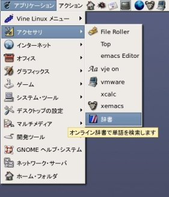
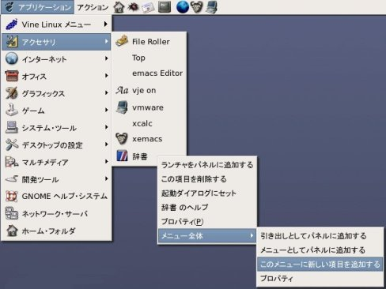
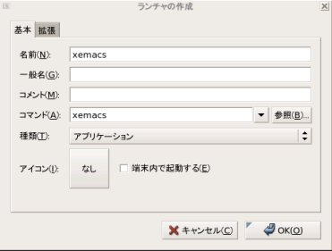

xemacsを起動するには，２つの方法があります．
GNOME端末などから，コマンドラインで
$ xemacs & [enter]
としてください．& がないと，バックグラウンドで動作
（コマンドラインから続けてコマンドを使用できなくなる）
いたしません．アプリケーションメニューに登録しておくと，マウスからの 操作でプログラムを起動できるようになります．
アプリケーションメニューのアクセサリへの登録の仕方を 示します．


名前： xemacs コマンド： xemacs と記述し， [OK]をクリック
